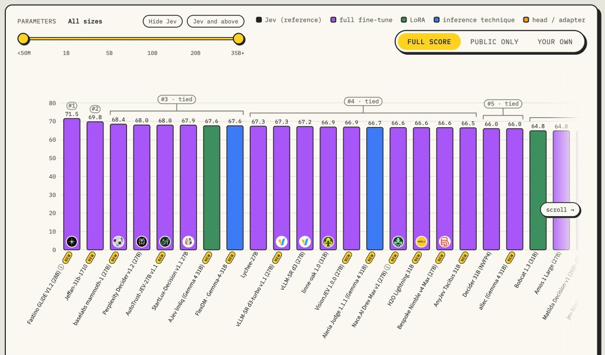
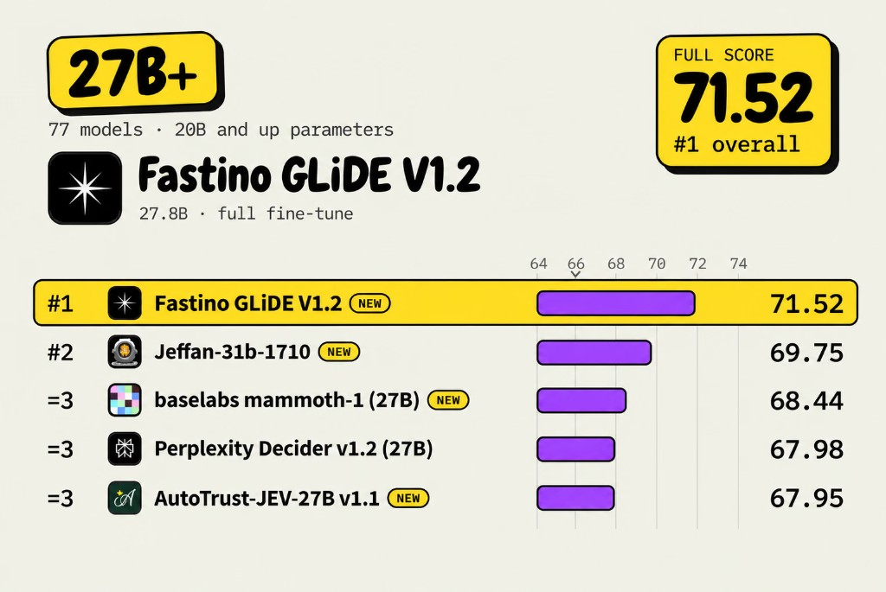

Academic experience
- Cambridge University Master’s in Physics
- Received PhD offer — King’s College, University of Cambridge — Statistical Learning in the context of Cosmology.
Honours
- Achieved highest score in the world on the theoretical physics entrance exam (GRE Physics, 100% raw score, 990/990 scaled score). September 2025.
- Gold in the British Mathematical Olympiad (BMO)
- Queens’ College, Cambridge University Scholarship
- Undergraduate Dean’s List Prize (Ranked 13th out of 249 students, Top 10%), UROP Scholarship, Best Literature Review Prize.
AI research
Creator of the Fastino GLiDE decision model.
Trained multiple SOTA frontier models. These models beat models from top frontier labs, including OpenAI’s Decision API, Microsoft’s decision model, Baseten’s Mammoth-1, Perplexity’s Decider, and Cloudflare’s Clef. How to Train a SOTA Frontier Decision Model.


Publications
arXiv:2610.02762. 4 other publications pending peer review in tier 1 journals.
Recent writing:
https://fastino.ai/blog/training-glide-sota-decision-model
https://fastino.ai/blog/introducing-glide-the-first-thinking-decision-model
Open source
- 3,200+ GitHub stars (sole author)
- Formal-Verification-RSI. 2,900 stars on GitHub. Formal verification for AI: a Lean 4 + Dafny proof checker that catches fake AI proofs (reward hacking), and verified recursive self-improvement (RSI) for coding agents. AI for math, physics and software engineering.
- OpenClaw and Hermes Agent official contributor with multiple merged PRs and PRs co-authored with the founder of Hermes Agent. Link.